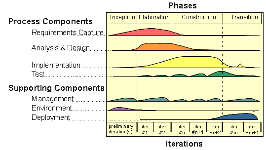
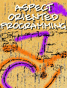

OOPSLA"98 Trip Report
,Mark Windholtz, 28 October 1998
OOPSLA is the leading conference in Object Oriented Software development. While much went on at the conference this trip report will only look at three exciting topics from the conference:
Rational Unified Process is Rational's Process for using the Unified Modeling Language (UML). They are now selling the Rational Unified Process as a product that gives companies a way to use the UML in an iterative process.
EXtreme Programming is a ground breaking new way to structure a development team focused on high quality and high-efficiency. In the past quality and efficiency have been opposed to each other. Here is a concept that lets these two forces reinforce each other. It also provides a high degree of predictability to code development. Using XP "the cost of change remains constant" throughout the development cycle and into the next release. XP relies heavily on code Refactoring which is also discussed in this section.
Aspect Oriented Programming is the most important part of this report. It's my judgement that AOP is the single biggest event in OO since Grady Booch's first article on Object-Oriented Design. AOP has the potential to solve many of the problems with OO code reuse and the performance problems associated with distribution of Objects. The application of AOP to Distributed Object Management and Workflow systems is immense.
Contents
Executive Summary
*Introduction to OOPSLA
*Rational Unified Process
*EXtreme Programming.
*Aspect Oriented Programming.
*Example of an Installation Program
*Visitor Pattern Solution
*Visitor Pattern Limitations
*The First AOP Solution
*The Second AOP Solution
*Summing Up AOP
*OOPSLA"98 Conclusion
*References
*Introduction to OOPSLA
OOPSLA is the ACM's (Association for Computing Machinery) annual conference for Object Oriented Programming Systems Languages and Architecture. While many computer conferences concern products and techniques that you can buy, OOPSLA conferences have always pointed the way to the newest practical and developing ideas in Object Oriented development. In some ways OOPSLA is much more practical in helping product development than other conferences because of OOPSLA focuses on problems and solutions. A programmer or manager can take ideas from an OOPSLA tutorial and make an immediate contribution to a current development project. That same programmer may return from a product-oriented conference and only be able to make a recommendation to purchase some product. OOPSLA is a best-practices conference. The presenters and panelists are people who build commercial systems using the latest developments in software.
OOPSLA"98 was held in Vancouver BC and had 2612 attendees this year. That’s roughly 400 more than last year.
The trip report from OOPSLA'96 announced the end of the OO Design Notation Wars. This year the place of the Rational Unified Modeling Language (UML) was confirmed. UML is king of the road. However, when attempting to use UML it becomes clear that more is needed than just a notation. Therefore, Rational has taken Ivar Jacobson's Object-Oriented Software Engineering Methodology [1992] (formerly known as Objectory), and adapted it to UML. Recently, they renamed the methodology to
the Rational Unified Process. No one said the acronym RUP but my guess is that it may change the name again to make for a better acronym.RUP tries to synthesis a decade of industry experience in Object Oriented development techniques. The Phases of the software development process are no longer Analysis-Design-Implementation. These three (Analysis-Design-Implementation) have been converted into processes that run in parallel. The phases of development are now Inception-Elaboration-Construction-Transition. These correspond to the phases of getting the original idea (Inception), working-out the rough architecture and project plan (Elaboration), building the software over multiple iterations (Construction), packaging and customer installation (Transition).
During each one of these stages various simultaneous development processes take place involving Requirements Capture, Analysis &Design, Implementation, and Testing. A secondary set of processes manages the development processes. These secondary processes include Management, Environment, and Deployment.

Within each Phase iterations occur. These iterations set specific entry and exit conditions on the path to a complete solution. And every iteration involves all the process components. At first it may seem like a bad thing to plan for Requirements Capture as late in the development cycle as Transition. It may seem like we are admitting we don't know what we are building because we are planning to change the product even as it is going out the door. While this may be an embarrassing thing to admit, it is almost always the true way that software is delivered. What the RUP allows is a way to measure and control the way in which most companies are already producing software.
Iterative development is not a new way of developing software as much as it is an optimized and documented form of what has been taking place in the industry already. Rational is licensing RUP as a product. Licensing a process may seem like a unique idea, but consulting companies like Arthur Anderson have licensed process for quite some time already.
One emphasis of iterative development is to test your ideas as soon as possible. This is a valuable way to reduce risk. This advice also applies not just to code construction but also to Architecture and Design. Architecture should be tested in real code soon after it is considered. The real code can be as simple as some very small example code or proof of concept. But it should be tested early. After it works then you can plan to make it work bigger and better. This is a very appropriate transition to the next topic. Extreme Programming takes the concept of risk mitigation to the its logical conclusion.
EXtreme Programming (XP) is the name that Kent Beck has given to the lightweight team process which he has been evolving over the years.
In XP, we use a very lightweight combination of practices to create a team that can rapidly produce extremely reliable, efficient, well-factored software. Many of the XP practices were created and tested as part of the Chrysler C3 project, which is a very successful payroll system implemented in Smalltalk
- Ron Jefferies.
A number of the big names in OO took a fresh look at the dynamics, costs, and risks of software development in an era when a completely new set of tools are available for OO development. The XP advocates at the after-hours meeting were Martin Fowler, Ward Cunningham, Kent Beck, and Ron Jefferies. Rather than repeating habits of the past with modern tools, they advocate letting loose in some areas and tightening the software discipline in other areas. The new mix has been very successful in the few areas that it has so far been practiced. The XP folks question the old economics of the software development lifecycle. It is commonly believed that the later in the process a bug is found (or a requirement added), the higher the cost of correcting the oversight. XP however points out that requirement change and bug discovery are never-ending so instead of optimizing the process to be a better predictor of unknowable changes XP is optimized to react to changes. In this way, the cost of change is brought down not by planning but by highly flexible reactions. This is accomplished by using new tools such as the following:
There was quite a bit of audience discussion about if XP was even possible without the modern tool sets that they have assembled. Ward Cunningham suggested that it could even be possible in a C++ environment where compile-link-load cycles still take place but XP may feel a little different.
Some of the interesting things they are doing on the publicly discussed Chrysler project are weekly releases into production, two people per keyboard gives immediate code reviews, never planning abstractions in advance lowers the risk of unneeded design elements, constant refactoring of the code base.
The following is a transcription of the handout the XP folks provided. To understand XP one needs to understand the whole picture together. So it's best if you get that in their own words:
Recognizing that the cost of changing a program no longer grows exponentially over time, XP relies on complex interactions between simple development practices to reduce project risk, improve responsiveness to business and technical learning and make programming more fun.
80% of the value of XP comes from the
last 20% of the practices. You are doing XP only if you adopt all of the practices together. You may have a fabulous development discipline, but it isn't XP.See Also:
Extreme Programming
http://www.armaties.com/Practices/PracLeadin.htmWiki-Web Discussions
http://c2.com/cgi/wiki?ExtremeProgrammingRoadmap
Aspect Oriented Programming.
AOP is being developed at Xerox Labs in Palo Alto. The prime motivation of Xerox is the more efficient use and programming of networked resources to manage documents. This is of obviously applicable to all companies developing document management or workflow applications. But the value of AOP can be demonstrated to apply to most areas of Object Oriented development.
Here is the abstract the AOP folks wrote:
Abstract
Achieving clean modularity in programs that involve multi-object protocols, error handling, complex performance optimizations or other systemic or cross-cutting concerns is known to be quite difficult. Typically, the implementation of these concerns ends up being tangled throughout the code, resulting in systems that are difficult to develop, understand and maintain.
AspectJ(tm) is an aspect-oriented extension to Java that enables programmers to implement these kinds of cross-cutting concerns in clean, modular ways. The general-purpose aspect construct makes it possible to capture in a modular unit issues that involve several classes. A special tool called an aspect weaver automatically links the aspects with the rest of the program.
These are some of the many concerns that Aspect Oriented Programming helps with.
An Aspect is a special kind of class that provides a way to define code in one place that would otherwise occur in multiple places. This immediately raises the question: "Isn't that the problem that Object-Orientation was supposed to fix in the first place?"
Yes it is! Object-Orientation (done right) helps reduce the amount of duplicate code in a program. Object-Orientation reduced the code so that we can now see other kinds of duplication emerging. Where OO reduced one kind of code duplication Aspects reduce a newly discovered kind of code duplication. OO added a second dimension to code reuse; AOP add a third dimension to code reuse.
This report is not a full tutorial on AOP. But hopefully it can give a taste of how AOP is implemented. I will be giving some presentations on AOP in the near future. The presentations will describe more examples and AOP and the syntax of AspectJ.
Example of an Installation Program
The following example looks at a typical design problem. Solves the problem with Patterns, and uncovers the new area of code duplication. Then the example applies AOP to show two shorter solutions to the design problem.
So suppose we want to write an install program for the ABC program on a distributed network with heterogeneous Operating Systems and Hardware.
The ABC program runs on multiple computers. Some of the computers are servers and some are clients. Servers need to know their clients. And clients need to know the single server they connect to.
For each component of the ABC program the installation program needs to check each Site and install the particular component according to the particular configuration of the Site.
class ProcessorSite {
private IPAddress ip;
private ProcessorType processor;
}
Note: the class definitions in the code examples are not complete. In each of the sections I've shown only the part of the class definition that was relevant to the current point. It would have been unnecessarily confusing to show all the code all the time.
class ServerSite extends ProcessorSite {
private Vector clients;
private ServerConfiguration sConfig;
}
class ClientSite extends ProcessorSite {
private ServerSite myServer;
private ClientConfiguration cConfig;
}
Our first thought might be to put methods in ClientSite and in ServerSite that would know how to install each of the various components.
class ServerSite extends ProcessorSite {
void installDLL( String dll ) { /* ... */ }
void installShareLib( String so) { /* ... */ }
void installExe(String exe) { /* ... */ }
void installUnixExe(String exe) { /* ... */ }
}
This starts to clutter-up the class ServerSite very quickly. We would also need to add these methods to ClientSite. We need functions that will be called for a Unix install and some methods that will be called for a Windows install. Worse than that though is that it is hard to extend. Suppose that later we need to install on a Macintosh. Suppose that we need to install a Java application. This additional behavior would require that we add code to both the class ServerSite and to class ClientSite and possibly to class ProcessorSite.
A standard Visitor Pattern as described in the ubiquitous Design Patterns Reference [Gamma95] helps to standardize this kind of access. Instead of having methods in the various Site classes repeated for each kind of component, we can put that functionality into a Visitor class. The parts of the Site hierarchy would then be stable even if other types of components and operating Systems needed to be added later.
class ProcessorSite {
abstract void accept( SiteVisitor v);
}
class ServerSite extends ProcessorSite {
void accept( SiteVisitor v) { v.visitServerSite(this); }
}
class ClientSite extends ProcessorSite {
void accept( SiteVisitor v) { v.visitClientSite(this); }
}
And we would build the needed functionality into a new SiteVisitor hierarchy.
abstract class SiteVisitor {
abstract void visitServerSite(ServerSite server);
abstract void visitClientSite(ClientSite client);
}
class DLLInstallVisitor extends SiteVisitor {
void visitServerSite(ServerSite server) { /* install DDLs on a Server */ }
void visitClientSite(ClientSite client) { /* install DLLs on a Client */ }
}
class SharedLibInstallVisitor extends SiteVisitor {
void visitServerSite(ServerSite server) { /* install Shared Libs on a Server*/ }
void visitClientSite(ClientSite client) { /* install Shared Libs on a Client */ }
}
And to run a visitor through the set of Sites looks like this:
installDLLs(ProcessorSite mainSite )
{
DLLInstallVisitor DLL_vis = new DLLInstallVisitor();
MainSite.accept(DLL_vis);
}
Now we can cleanly add more types of components without disturbing the original classes that provide a model of the Sites. For instance, the following visitor would allow us to modify environment or Registry info for each Site.
class ModifySysInfoVisitor extends SiteVisitor {
void visitServerSite(ServerSite server) { /* Modify the system info on a Server*/ }
void visitClientSite(ClientSite client) { /* Modify the system info on a Client */ }
}
So far so good. The Visitor pattern is a good proven solution that has been used for over 15 years and well documented for over 5 years. We are still left with the uncomfortable need to put the accept() method into the Site model. And this is scattered around the class hierarchy. Scattering the accept() method around the hierarchy violates encapsulation and raise concerns about separation of concerns.
Also, if we need to add a new type to the Site Framework we will need to do extensive work on the Visitor framework. We will need to add a new method to each Visitor for the new Site type. For example, suppose we want to add a SuperComputerSite to our network.
abstract class SiteVisitor {
abstract void visitServerSite(ServerSite server);
abstract void visitClientSite(ClientSite client);
// new method
abstract void visitSuperComputerSite(SuperComputer superDuper);
}
We also have to add this method to every subclass of SiteVisitor in order to provide an implementation.
To recap, the Visitor pattern allows us to add functionality to an existing framework without changing the original the framework. This provides a nice seperation of concerns. However, in order to use the Visitor Pattern we still cause some interface pollution because we need to add the accept() method. It would be nice if we could also separate concerns of the Visitor pattern from the otherwise clean model.
Below I've repeated the original implementation of the Site Hierarchy in its cleanest form.
class ProcessorSite {
private IPAddress ip;
private ProcessorType processor;
// ...
}
class ServerSite extends ProcessorSite {
private Vector clients;
private ServerConfiguration sConfig;
}
class ClientSite extends ProcessorSite {
private ServerSite myServer;
private ClientConfiguration cConfig;
}
With AspectJ we can then define a Visitor aspect for this hierarchy below:
aspect VisitorAspect {
introduce ProcessorSite.accept() {
abstract void accept( SiteVisitor v);
}
introduce ClientSite.accept(), ServerSite.accept() {
void accept( SiteVisitor v) {
v.visitClientSite (thisObject);
}
}
introduce ServerSite.accept() {
void accept( SiteVisitor v) {
v.visitServerSite (thisObject);
}
}
} // end of VisitorAspect
You still develop the Visitor code the same as before. The advantage to this form of AOP is that we have removed the accept() method from the Site hierarchy and placed it in one unit. This makes it easier to understand and change.
Unfortunately we still need to create and maintain the Visitor hierarchy when applying this aspect.
There is a second way to implement an AOP solution that removes the need to code the Visitor hierarchy. Unfortunately I don't have the code for that implementation. I'll update this section of the report as soon as I can get a code example.
This report gave a brief look at Aspect Oriented Programming (AOP). It could be the next major development in Object Oriented development. AOP adds a 3rd dimension to software development and gives us a way to separately code cross-cutting concerns.
OOPSLA is the most important conference for Object Oriented software development. OOPSLA is valuable to developers and managers alike. The exciting ideas from this year's conference included the Rational Unified Process, Extreme programming, and especially Aspect Oriented Programming.